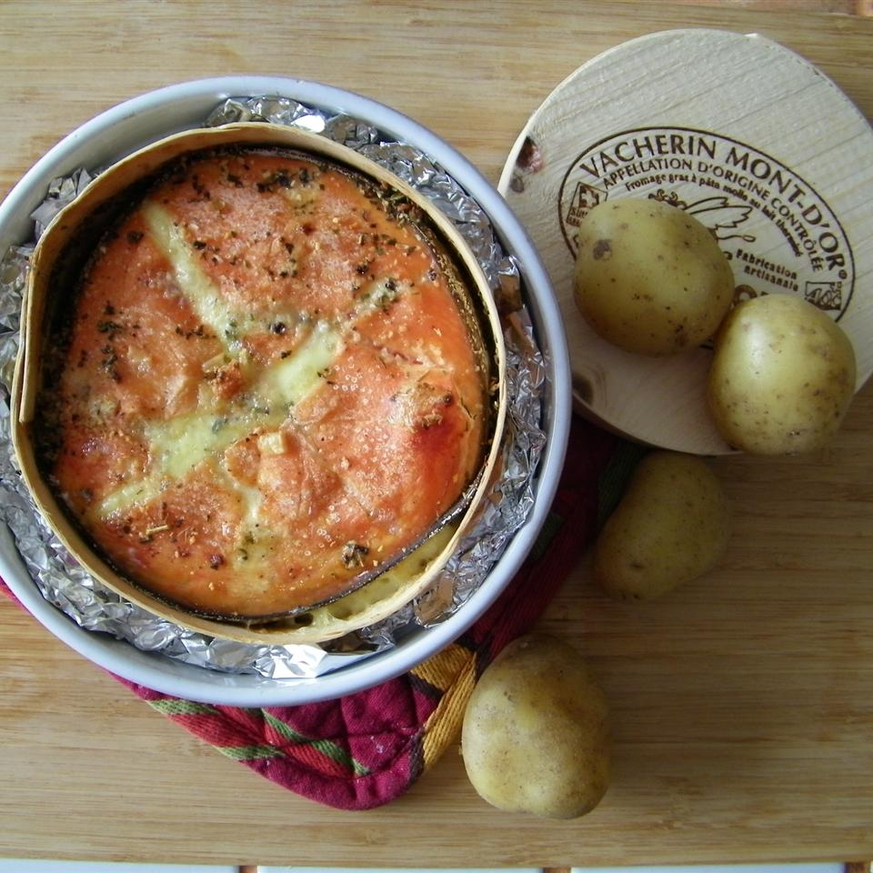

Garlicky Baked Brie

Description
This yummy, warm baked Brie has a garlicky center with a touch of sweet red pepper jelly topping. Serve with fresh baguette or crackers. Your guests will be begging for the recipe
Ingredients
- 1 (9inch) wheel Brie Cheese
- 5 cloves garlic, crushed
- 1½ tablespoons red pepper jelly, divided
Directions
- Preheat oven to 350 degrees F (175 degrees C).
- Cut Brie cheese in half lengthwise, creating two thinner wheels. Spread crushed garlic on cut surface of 1 half; top garlic layer with 1 1/2 teaspoons red pepper jelly. Place the other Brie cheese half on top of filling. Spread remaining 1 tablespoon red pepper jelly on top of Brie cheese; place in a round casserole dish.
- Bake in the preheated oven until rind begins to soften, about 15 minutes.